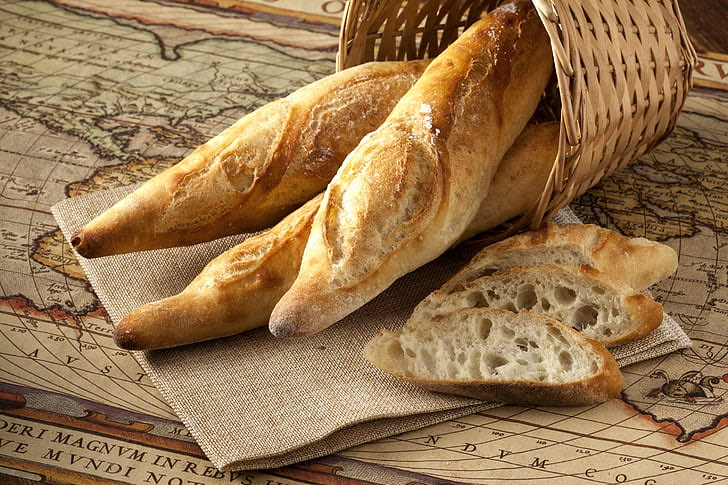
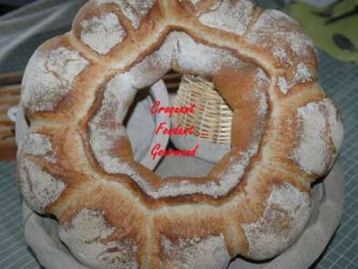
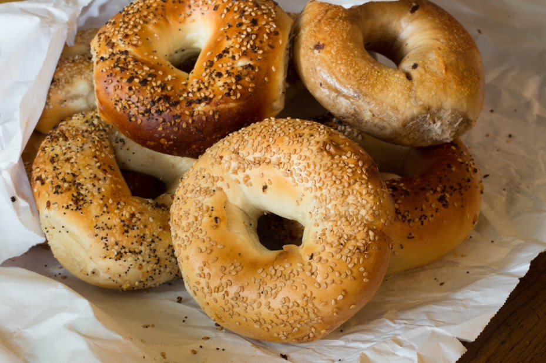

| Photo |
références |
description |
Prix |
|  |
ref1 |
Une baguette de pain ou simplement baguette, parfois appelée baguette de Paris ou pain français (belgicisme et québécisme), mais aussi pain baguette est une variété de pain, reconnaissable à sa forme allongée. |
1.07 euros |
 |
ref2 |
Le pain est obtenu par cuisson de la pâte, au four traditionnel, ou four à pain, ou par d'autres méthodes (pierres chaudes par exemple). La fabrication du pain (panification) est le métier du boulanger. |
1.56 euros |
|  |
ref3 |
Le pain est obtenu par cuisson de la pâte, au four traditionnel, ou four à pain, ou par d'autres méthodes (pierres chaudes par exemple). La fabrication du pain (panification) est le métier du boulanger. |
1.33 euros |
|  |
ref4 |
Ces petits pains, d'une dizaine de centimètres de diamètre originaires d'Europe centrale ou orientale, ont suivi les immigrants juifs d'Europe de l'Est aux États-Unis (New York) et au Canada (Montréal) où ils sont servis garnis de fromage blanc, de saumon fumé ou d'autres ingrédients selon leur disponibilité et l'imagination du cuisinier. On les retrouve parfois nature mais souvent aromatisés aux graines de sésame, de carvi, de pavot, à la cannelle, aux oignons frits ou encore au raisin. |
1.41 euros |
 |
ref5 |
Le pain multigrain est un pain composé d'au moins deux types de grains différents |
1.55 euros |